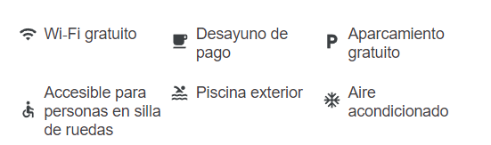

EHotel 104 Art Suites está inspirado en el arte y la arquitectura de artistas colombianos, quienes han
intervenido cada uno de sus espacios creando ambientes únicos. Este singular hotel en Bogotá goza de una
atmósfera exclusiva con 27 habitaciones y apartamentos, algunos de ellos con balcón, chimenea, jacuzzi o
bañera. Convenientemente todos los apartamentos disponen de cocina equipada y servicio de entrega de
periódico. Además, el hotel cuenta con un restaurante internacional, planes románticos y acepta mascotas
(aplican cargos y restricciones).
S E R V I C I O S
